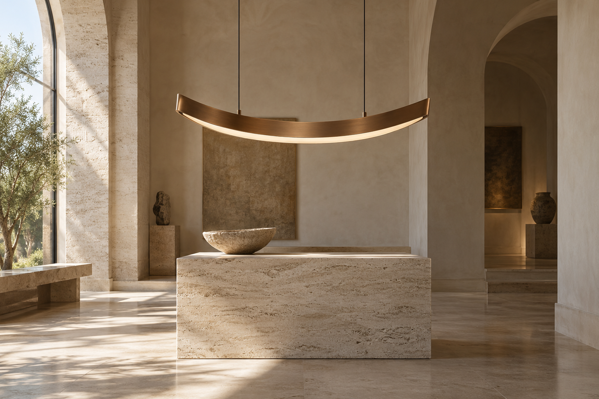
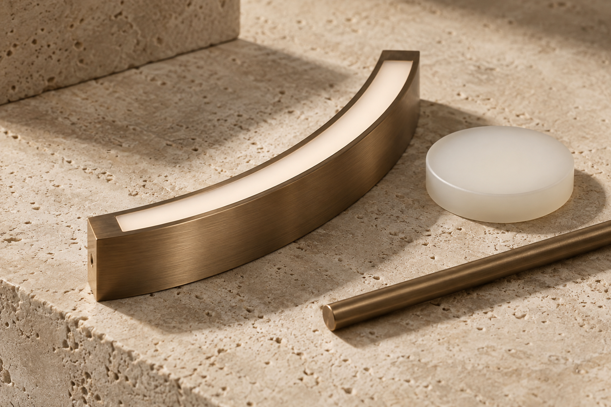

Light,
held in form.
AUREL makes the quiet architecture of illumination: a curve, a surface, a softened edge at the end of the day.
Designed as a small collection for the spaces we return to. Made to belong to the room before it is switched on.
Enter the collection ↗

Made to meet the room.
We begin with the way a surface receives light. Bronze brings a measured warmth; opal glass gathers brightness and lets it go slowly. Each object is drawn around that exchange, with the surrounding architecture always in mind.
The result is a family of considered forms: intimate in scale, exact in proportion, and generous in the light they leave behind.
Explore the forms ↗Three gestures.
One quieter light.
Suspended, placed against a wall, or kept close at hand. Each fixture offers a different relationship between the object and the architecture around it.
Patina that keeps its depth.
A softened metallic finish meets the matte clarity of opal. We choose this pairing for its warmth in daylight as much as for its gentleness after dusk.
- Surface
- Hand-worked bronze
- Diffuser
- Opal glass
- Character
- Quiet, directional glow